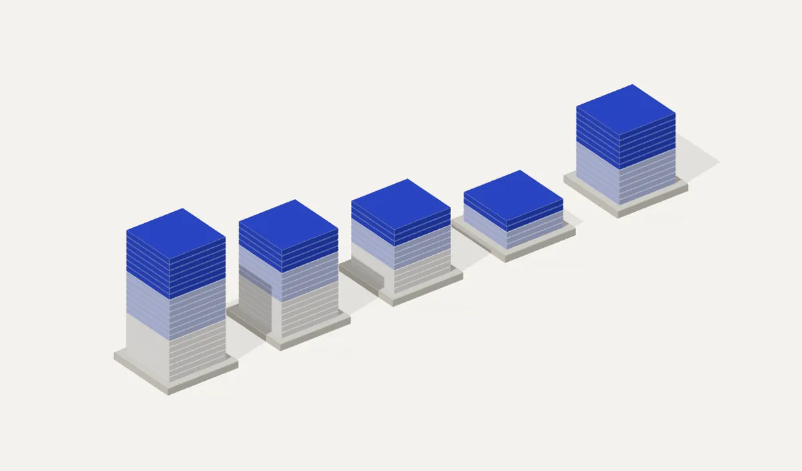

BUT GACO MCMO · BC5 · Assurer le développement des affaires
Achats, vente et relation client
Du besoin d’un service jusqu’au fournisseur retenu, puis de la prospection à la fidélisation.
Caner Alpyürük, alternant acheteur à l’Hôpital Nord Franche-Comté
Cinq compétences pour la licence, huit blocs de compétences pour le master. Chaque compétence de la licence a sa page, avec ses expériences, ses missions, ses outils et les projets qui la démontrent.
Le BUT GACO, de 2023 à 2026, confère le grade de licence. Chaque compétence se décline en pages de niveau : trois pour le tronc commun, deux pour le parcours MCMO, qui commence en deuxième année.
BUT GACO MCMO · BC5 · Assurer le développement des affaires
Du besoin d’un service jusqu’au fournisseur retenu, puis de la prospection à la fidélisation.
BUT GACO MCMO · BC1 · Gérer un projet
Cadrer, planifier, coordonner, puis recaler quand le projet dérive.
BUT GACO MCMO · BC2 · Participer au pilotage
Mesurer, comprendre l’écart, puis décider en connaissance de cause.
BUT GACO MCMO · BC3 · Concevoir la démarche marketing
Étudier un marché, choisir une cible, puis franchir une frontière.
BUT GACO MCMO · BC4 · Déployer le marketing omnicanal et digital
Relier les canaux pour qu’un client passe de l’un à l’autre sans rupture.
Vue d’ensemble de la licence : trois années et projets à la une · Les 64 apprentissages critiques
Master Entrepreneuriat et management de projets, parcours Management de projets, à l’Université de Haute-Alsace : Master 1 en cours, 2026-2027. Ses huit blocs de compétences, d’après la fiche nationale RNCP42354 :
Les huit blocs en détail, ce que la licence en a déjà abordé et mes missions de l’année
Une tour par compétence, de la première année en bas à la troisième en haut. Cliquez sur une tour pour l’ouvrir.

Ce que j’ai réellement utilisé, en cours, en stage ou en alternance.
Les trois premiers sont les mots avec lesquels je me décris ; les trois autres, ce que l’alternance m’a apporté.
Les 64 apprentissages critiques du programme, classés par compétence et par année, avec une recherche par mot ou par code.